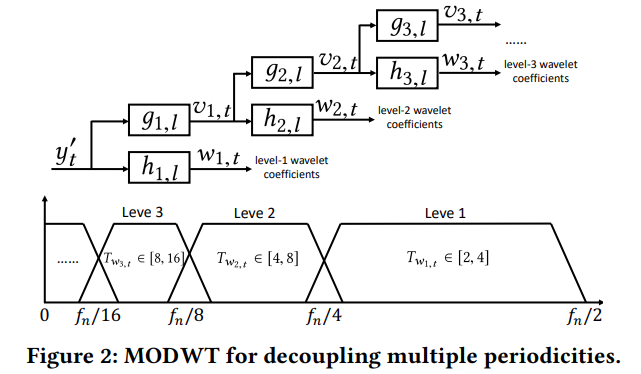

在AIOps了解到RobustPeriod这一算法框架来对时序数据进行处理论文
https://developer.aliyun.com/article/782285
囿于本人相关数学知识的积累不足，本文主要是将整体思路和公式说明进行尽可能准确的抽象描述，之后也是尝试与https://github.com/ariaghora/robust-period 的实现进行对应，尝试在自己的AIOps场景中进行实现
PS：本文只进行了要对算法进行理解复现的最低限度的学习，有兴趣相关研究的还是需要把论文的数学证明和主要的几篇相关文献也看一下了
$$
y_t = \tau_t + \sum_{i=1}^ms_{i,t} + r_t, t=0,1,…,N-1
$$
文中将时序数据进行如上的数学表示，实际时序数据的函数由趋势函数$\tau_t$、m个周期分量函数$s_{i,t}$以及$r_t=a_t+n_t$分别表示噪声和离群点组成。于是，RobustPeriod为了能够发现时序数据中潜在的周期分量，并且保证结果robust，即很大程度上不受趋势函数、噪声和离群点的影响，将对时序数据进行多周期检测的过程分为三个部分
预处理，将时序数据存在的趋势和离群点进行移除
多周期解耦，分离出不同层次的周期性，并进行排序，优先表现更显著的周期分量
单周期检测，
预处理
使用Hodrick-Prescott算法计算时序数据的大致趋势并移除
$$
\hat{y_t}=y_t-\hat\tau_t, \hat\tau_t=\mathop{argmin}{\tau_t}\frac{1}{2}\sum_{t=0}^{N-1}+\lambda\sum{t=1}^{N-2}(\tau_{t-1}-2\tau_t+\tau_{t+1})^2
$$Robert J Hodrick and Edward C Prescott. 1997. Postwar US business cycles: an empirical investigation. Journal of Money, Credit, and Banking (1997), 1–16.
移除显著的离群点
$$
y_t^{‘}=\Psi(\frac{\hat{y_t}-\mu}{s}),\Psi(x)=sign(x)min(|x|,c)
$$Alexander Dürre, Roland Fried, and Tobias Liboschik. 2015. Robust estimation of (partial) autocorrelation. Wiley Interdisciplinary Reviews: Computational Statistics 7, 3 (may 2015), 205–222.
多周期解耦
- 这部分使用最大重复离散小波转换(Maximal overlap discrete wavelet transform, MODWT)将经过预处理的时间序列分解成不同层次的多个时间序列然后交给下一步进行周期分析
小波变换https://zhuanlan.zhihu.com/p/22450818 ，将傅里叶变换的基函数改为小波母函数，通过两个参数控制函数位移和伸缩（时间和频率），建立能将信号在时间和频率两种层面上进行体现的时频谱
在连续小波变换的基础上，考虑到现实场景下数据采集是不连续的且有限的，包括计算机也不擅长进行连续问题的计算，提出了离散小波变换discrete wavelet transformhttps://zhuanlan.zhihu.com/p/69956002 ，这里介绍了离散小波变换的Mallet算法，通过一次半子带滤波分离出高频信号然后将低频信号进行两倍下采样后重复该过程，最后得到在时间线上频率在$(\frac{F_s}{2},F_s),(\frac{F_s}{4},\frac{F_s}{2}),(\frac{F_s}{8},\frac{F_s}{4}),…$的小波信号，这些小波信号也是对于当前频率范围兼顾时域分辨率和频域分辨率的结果
MODWT作为一种DWT的方案，

spectral leakage频谱泄露，其他影响因素产生新的频率分量导致周期分量
ACF peak detection峰值探测
#TODO